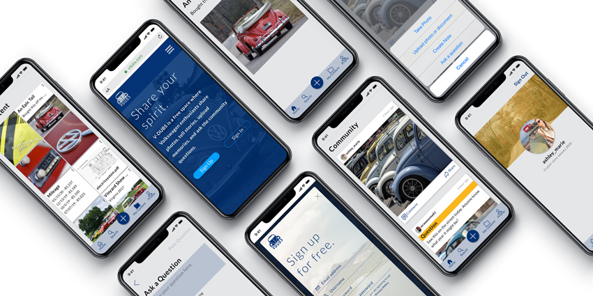

V-DUBS is a mobile storage and sharing app for Volkswagen enthusiasts.
Volkswagen enthusiasts have a variety of ways to access information including: online forums, and personal cloud storage. However, no cohesive app currently exists where Volkswagen enthusiasts can store and share their passion.
V-DUBS is free storage and sharing app for Volkswagen enthusiasts to share photos, tell stories, upload documents related to your passion, and ask questions to the community.
User Research
I conducted 2 user surveys. The first survey on cloud storage elicited interesting results that warranted conducting a second survey on social media usage.
In-depth interviews:
Having coffee with several members of the Volkswagen community led to more insights about their web habits as they pertain to Volkswagen. I learned there are 3 major tasks that Volkswagen enthusiasts do:
Competitive Analysis
I performed competitive and SWOT analyses on 2 cloud storage platforms (Google Drive and Dropbox) and 1 social/organizational platform, Pinterest. I learned that opportunities do exist to create a pleasant, easy to use platform that can store information.
View Full ResultsUser Personas
When I attend Volkswagen events, I observe several types of people. Using my own observations, along and the survey data, I generated 3 personas:
I love cars and am currently restoring a 1996 Volkswagen Jetta. I want to easily share restoration photos and ask questions to the community.
I find myself sharing content in multiple places. I don’t want to use multiple apps to find and share information.
I consider myself an amateur car restorer, collector, and photographer. I want an app where I can share my passion with others who feel the same.
I can’t find any cohesive apps related to this community. The other platforms I use are cluttered with irrelevant information.
I manage automobile exhibits for an antique auto museum and enjoy driving my classic VW to auto shows. I want an easy way to create notes and share photos in one app.
Uploading my notes to share with others isn’t easy and I can’t create new content with my current apps.
User Stories
After researching apps and creating a lengthy list of user tasks, I prioritized these tasks to create an MVP.
High Priority Items
My original error was including too many high priority user stories in my MVP. I re-evaluated each user story using the 80/20 rule. Because a priority isn’t set to high, does not mean it won't be developed. It will just be developed with less urgency.
User Flows
From the highest priority user stories, I sketched flows for the following tasks:
Wireframes
I tested 10 tasks ranging from signing up for an account, creating content, and logging out of the app.
View TasksResults Summary:
While color palettes, fonts, and developing a visual style generally comes easy to me, I find myself usually taking more time on logo development. It is important for me to understand what a brand is about, research what may already exist, and create numerous sketchesb before I settle on a final design.

Volkswagen is a playful brand with vibrant vehicle colors and humorous, vintage car ads. My moodboard incorporated these values into the branding. The target audience should be able to identify with the elements of the app: from the logo design and color palette to typography and imagery.
Logo
The logo evolved from a word cloud of car-related terms to the final version of a Volkswagen Beetle. The logo needed to be clear and easily identifiable. There is almost nothing else more identifiable than the shape of a Volkswagen Beetle.
V-DUBS is a play on letters V-W. I played with other names, but quickly settled on this as it is an identifiable term in the VW community. The font itself resembles the font on European license plates.
Color Palette
Primary Colors
#003270
#BAC3CF
#008FE0
Secondary Colors
#07040D
#F9B81C
#FDF8F0
The color palette is made of classic Volkswagen car colors from the 1960s and 1970s. Primary colors are found mostly on the landing page. In-app, colors are generally neutral with subtle pops of color. The focus in-app is on the content.
Typography
FE Font is a display font that mimics the font used on European license plates, and is used only for the logo. Lato is a simple, modern font to complement the playfulness of Fe Font and is used for all headlines and text throughout the app.
View Style GuideWhile color palettes, fonts, and developing a visual style generally comes easy to me, I find myself usually taking more time on logo development. It is important for me to understand what a brand is about, research what may already exist, and create numerous sketchesb before I settle on a final design.
Landing Page Background Image
Over 70% of users prefered the Option B. Seeing the iconic Volkswagen bus and VW logo better represents the brand.
Bottom Navigation Bar vs Top Tab Navigation
Over 80% of users prefered Option A. Keep navigation simple and familiar. Don't make people think.
Dashboard Background Color
55% of users prefered Option B. This particular test will warrant more research.
Hi Fi Mockups
I conducted a second round of user testing with 14 tasks.
View TasksResults Summary:
When moving from user testing round 1 to my hi-fi mockups, I noticed several tasks that I should have tested for and several elements in my wireframes that didn't quite translate in the hi-fi mockups. These new changes were incorporated into the second round of user testing.
In the Volkswagen community, everyone has a story. V-DUBS is a platform where every VW lover and enthusiast to share their story. Being a Volkswagen enthusiast myself, this project was fun to bring from concept to completion. Though I expected my initial timeline to be shorter, encountering and solving several challenges that arose as the project progressed made for: 1) less assumptions about what users want and 2) an accurate app representing the wants and needs of the community. One other challenge I overcame was containing / limiting scope creep. I have so many interesting ideas for what the app could be in the future. So, I had to resist the urge to do all the things at once with the app.